システム設定
戦闘BGMの変更
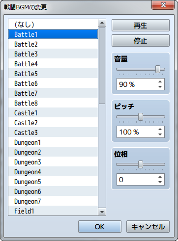
機能
戦闘中に再生するBGMの設定を変更します。変更後の設定は、再度このイベントコマンドで変更するまで有効です。
設定項目
- ファイルリスト
- 使用するBGMのファイルを指定します。再生しない場合は［（なし）］を指定します。
- 再生／停止
- ［再生］をクリックすると現在の設定に基づいてBGMを再生します。終了するには［停止］をクリックします。
- 音量
- 音量を指定します。
- ピッチ
- ピッチ（50～150％）を指定します。100％より高くすると再生速度が速くなり、音階も高くなります。
- 位相
- 位相（-100～100）を指定します。-の値で左スピーカー、＋の値で右のスピーカーの比重が大きくなります。
備考
- 戦闘中に変更した場合、次の戦闘から反映されます。
- マップと戦闘のBGMが同一のときは、演奏を止めずに画面が切り替わります。
勝利MEの変更
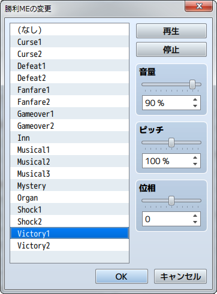
機能
戦闘勝利時に再生するMEの設定を変更します。変更後の設定は、再度このイベントコマンドで変更するまで有効です。
設定項目
- ファイルリスト
- 使用するMEのファイルを指定します。再生しない場合は［（なし）］を指定します。
- 再生／停止
- ［再生］をクリックすると現在の設定に基づいてMEを再生します。終了するには［停止］をクリックします。
- 音量
- 音量を指定します。
- ピッチ
- ピッチ（50～150％）を指定します。100％より高くすると再生速度が速くなり、音階も高くなります。
- 位相
- 位相（-100～100）を指定します。-の値で左スピーカー、＋の値で右のスピーカーの比重が大きくなります。
敗北MEの変更
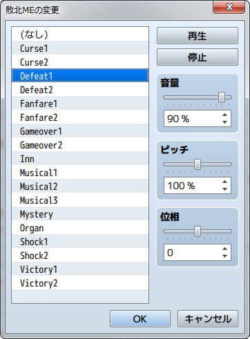
機能
戦闘敗北時に再生するMEの設定を変更します。変更後の設定は、再度このイベントコマンドで変更するまで有効です。
設定項目
- ファイルリスト
- 使用するMEのファイルを指定します。再生しない場合は［（なし）］を指定します。
- 再生／停止
- ［再生］をクリックすると現在の設定に基づいてMEを再生します。終了するには［停止］をクリックします。
- 音量
- 音量を指定します。
- ピッチ
- ピッチ（50～150％）を指定します。100％より高くすると再生速度が速くなり、音階も高くなります。
- 位相
- 位相（-100～100）を指定します。-の値で左スピーカー、＋の値で右のスピーカーの比重が大きくなります。
乗り物BGMの変更
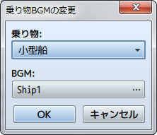
機能
乗り物に乗っているときに再生するBGMの設定を変更します。
設定項目
- 乗り物
- BGMを変更する乗り物を指定します。
- BGM
- 再生されるBGMを指定します。
セーブ禁止の変更
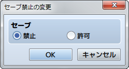
機能
プレイヤーによるセーブ操作の可否を制御します。変更後の設定は、再度このイベントコマンドで変更するまで有効です。
設定項目
- セーブ
- セーブ操作を不可とするには［禁止］、可能にするには［許可］を指定します。
メニュー禁止の変更
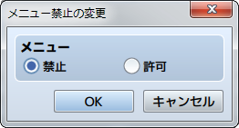
機能
プレイヤーによるメニュー画面の呼び出し操作の可否を制御します。変更後の設定は、再度このイベントコマンドで変更するまで有効です。
設定項目
- メニュー
- メニュー画面の呼び出しを不可とするには［禁止］、可能にするには［許可］を指定します。
エンカウント禁止の変更
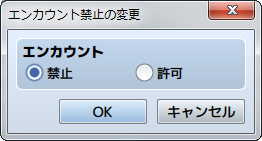
機能
パーティ移動中のエンカウント（ランダムで敵グループとの戦闘を発生させる処理）の有無を制御します。変更後の設定は、再度このイベントコマンドで変更するまで有効です。
設定項目
- エンカウント
- エンカウントの発生を止めるには［禁止］、発生させるには［許可］を指定します。
並び替え禁止の変更
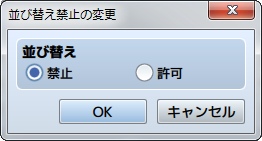
機能
プレイヤーによるパーティメンバーの並び替え操作の可否を制御します。変更後の設定は、再度このイベントコマンドで変更するまで有効です。
設定項目
- 並び替え
- 並び替え操作を不可とするには［禁止］、可能にするには［許可］を指定します。
ウィンドウカラーの変更
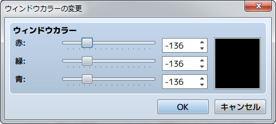
機能
ウィンドウカラーの設定を変更します。変更後の設定は、再度このイベントコマンドで変更するまで有効です。
設定項目
- ウィンドウカラー
- 変更後の色を［赤］［緑］［青］の成分比（-255～255）をもとに指定します。指定中の色は右側のプレビュー領域で確認できます。
アクターの画像変更
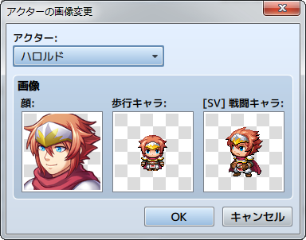
機能
アクターの画像を変更します。変更後の設定は、再度このイベントコマンドで変更するまで有効です。
設定項目
- アクター
- 対象のアクターを指定します。
- 画像
- ［顔］［歩行キャラ］［[SV]戦闘キャラ］をダブルクリックすると開くウィンドウでそれぞれ指定します。［（なし）］を指定すると画像が非表示になります。
乗り物の画像変更
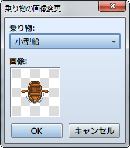
機能
乗り物の画像を変更します。変更後の設定は、再度このイベントコマンドで変更するまで有効です。
設定項目
- 乗り物
- 対象の乗り物を指定します。
- 画像
- 変更後の画像を、ダブルクリックすると開くウィンドウで指定します。［（なし）］を指定すると画像が非表示になります。